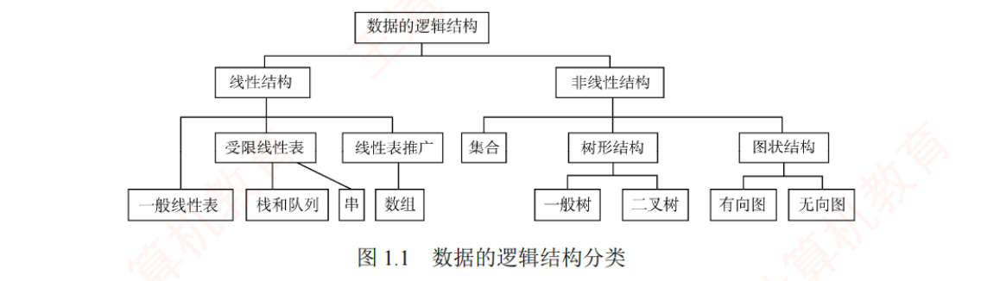
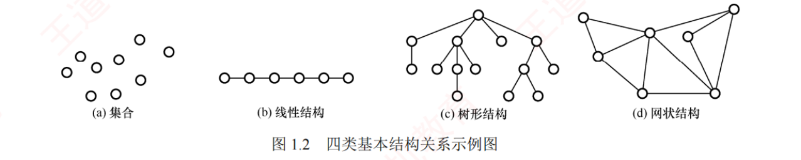

← 返回 408 复盘中心
怎么读这一页： 正文是书上的内容，我只做了
结构重排和取舍 （砍掉重复例子、把散在几页的同类结论并到一处）。色块分两个维度——
① 按来源（原有的三种）：
我的补讲 ——书上没写或写得太略、但你需要它才能真懂的部分；
必记结论 ——直接决定选择题对错；
陷阱 ——实测最容易做错的地方。
② 按动作（2026-09-01 回炉时新加的两种）：
背景 · 考试不碰 ——虚线灰块，
明确告诉你哪几段可以快速划过 （全是重点＝没有重点）；
知识串联 ——绿块，就地标出
这里和后面哪一章、和组原／OS／网络的哪个概念是同一件事 。
蓝色「我的补讲」块从本次回炉起统一按三段写：
书上说 X → 潜台词是 Y → 所以能考 Z ，
其中「能考 Z」全部有
练习系统本章 27 道题 作实证，不是凭空推的。
右侧灰色
📄 p.N 点开就是原书对应页（PDF 会跳到该页）——它是
溯源锚点 （想看原书排版和多余例子时用），
不是"这里没写你自己去看" ：凡
📄 处的考点，本页正文都已讲全。
📄 p.1
本章定位
考纲内容 ：（一）数据结构的基本概念 （二）算法的基本概念、算法的时间复杂度和空间复杂度。
王道的复习提示 ：本章重点在于掌握算法时间复杂度和空间复杂度的分析方法 。统考真题中，无论算法设计题还是选择题，通常都会要求分析时间复杂度。
我的补讲 · 这一章到底该花多少时间
实测本章 27 道课后题里，复杂度占 16 道选择题 + 2 道综合题，概念只有 7 道选择题 + 2 道综合题 。而这 7 道概念题翻来覆去只考四个判据（见下面的「必记结论」）。
所以本章的正确时间分配是：概念部分读一遍、记住四条判据即可，剩下全部时间砸在复杂度分析上 。
复杂度题在 2009–2026 的统考里出现了 14/15 年 ，是全书性价比最高的送分点。
挖 · 27 道题的精确分布与 7 道真题的落点（动手前先看这张表）
书上说 ：本章重点是复杂度分析，选择题和算法设计题都会要求分析复杂度。
潜台词是 ：这句"重点"在题库里是可以量化的——本章 27 道题拆开来看，
真题一道都没落在概念上 ：
板块 选择题 综合题 其中统考真题 1.1 概念（三要素 / 逻辑 vs 存储 / 四种存储方式） 5 2 0 1.2.1 算法特性与评价 2 0 0 1.2.2 复杂度分析 16 2 7 合计 23 4 7
7 道真题的年份：
2011 · 2012 · 2014 · 2017 · 2019 · 2022 · 2025 ——
全部是复杂度题，且全部是选择题 （本章从未出过综合真题）。
所以能考 ：概念那 7 道题翻来覆去只考四个判据（见下面的「必记结论」），
读一遍记住判据即可 ；
剩下的时间全部砸在复杂度上 ——而复杂度里真正要练的又只有三样：
速查表（5 道秒杀）、内层依赖外层的求和（4 道真题）、递归（3 道） 。
这三样在本页下半部分各有一张并排表，是本章最值钱的三块。
串 · 这一章是全书的度量衡，往上还接着组原的性能公式
→ ch2–ch8 后面每一章的结论表，最后一列都是复杂度 ：线性表的插删、树的高度、图的遍历、七种排序的时间/空间——
本章不是"第 1 章"，是那七章共用的一把尺子 。尺子没校准，后面每一章的结论都读不懂。→ 组原 ch1 性能指标那条主公式
CPU 执行时间 =（指令条数 × CPI）÷ 主频
时间复杂度管的正是"指令条数"这一个因子 ，CPI 和主频是硬件的事。所以"换个 O(n log n) 的算法"和"换块高主频 CPU"是在同一个乘积里动手，互不替代也互不抵消 ——组原 ch4 CISC/RISC 之争、ch5 流水线，讲的都是动另外两个因子。数构的大 O 故意扔掉常数，组原的公式一个常数都不许扔 。别把"复杂度相同"读成"跑得一样快"。
1.1 数据结构的基本概念
1.1.1 术语链条：数据 → 数据项 → 数据元素 → 数据对象
📄 p.1–2
数据 ：信息的载体，是能输入计算机并被程序识别和处理的符号的集合，是计算机程序加工的原料。数据元素 ：数据的基本单位 ，通常作为一个整体考虑和处理。一个数据元素可由若干数据项 组成，数据项是构成数据元素的不可分割的最小单位 。数据对象 ：具有相同性质的数据元素的集合 ，是数据的一个子集。例：整数数据对象 N = {0, ±1, ±2, …}。
数据类型与抽象数据类型
数据类型 = 一个值的集合 + 定义在该集合上的一组操作的总称。
原子类型 ：其值不可再分（如 int）。结构类型 ：其值可进一步分解为若干成分（分量）。抽象数据类型 ADT ：一个数学模型以及定义在该模型上的一组操作。它规定了数据的取值范围、结构形式、可执行的操作集合 ——只说「能做什么」，不说「怎么实现」。
背景 · 原子类型 / 结构类型，看懂名字即可
「原子类型」「结构类型」这两个词，统考从未单独设过题 ，它们只是"数据类型 = 值的集合 + 操作的集合"这句定义下面的两个举例（int 是原子的，struct 是结构的）。
这一小段扫一眼就走，不必背定义。抽象数据类型 ADT 那一条——它决定了后面每一章的写法，见下一块。
挖 · ADT 那句"只说能做什么、不说怎么实现"，决定了全书每一章的写法
书上说 ：抽象数据类型是一个数学模型以及定义在该模型上的一组操作，它规定数据的取值范围、结构形式和操作集合。潜台词是 ：数一数就会发现，ADT 里少了三要素中的"存储结构" ——ADT ＝ 逻辑结构 ＋ 运算，不含 怎么存。
这正是王道每一章的固定骨架：先给"定义和基本操作"（ADT 层，与机器无关），再分头给"顺序实现 / 链式实现"（存储层）。
你在 ch2 看到的InitList / ListInsert / ListDelete是 ADT，SqList / LNode才是实现。所以能考 ：① 1.1-综2「同一逻辑结构、同一运算，换个存储效率就不同」——这道题就是 ADT 与实现分离的直接推论；
② ch2 起每章都有的选型题 （"某应用最常用的操作是 X，应采用哪种存储"）之所以成立，前提就是"同一个 ADT 可以有多种实现"；
③ 概念题里"ADT 与具体实现无关""ADT 描述的是逻辑特性"一律判对，"ADT 规定了存储方式"一律判错。
必记结论 · 数据结构的定义
数据结构 = 相互之间存在一种或多种特定关系的数据元素的集合 ，包括三方面内容：逻辑结构、存储结构、数据的运算 。算法的设计取决于所采用的逻辑结构，而算法的实现依赖于所选择的存储结构。
1.1.2 三要素（一）逻辑结构
📄 p.2
逻辑结构是数据元素之间的逻辑关系 ，即从逻辑角度对数据的描述。它与数据在计算机中的存储方式无关，独立于具体系统 。分为线性结构和非线性结构。

图 1.1 数据的逻辑结构分类（裁自原书 p.2）
类别 元素间关系 例子 集合 除「同属一个集合」外别无其他关系 — 线性结构 一对一 线性表、栈、队列、串、数组 树形结构 一对多 一般树、二叉树 图状 / 网状结构 多对多 有向图、无向图

图 1.2 四类基本结构关系示例图（裁自原书 p.2）
挖 · 「线性 vs 非线性」的判据是"一对一"，不是"看上去复不复杂"
书上说 ：线性结构一对一、树形一对多、图状多对多、集合除同属一个集合外别无关系。潜台词是 ：判定只看一件事——每个元素的直接前驱、直接后继各有几个 ；与元素本身长什么样、操作受多少限制统统无关 。
字符串的元素是字符（一对一，线性）；栈和队列只是限定了插删位置 的线性表，限制的是运算不是关系，仍然线性。所以能考 ：1.1-2 给的四个选项是 树 / 字符串 / 队列 / 栈 ——除树外全是线性。命题人造干扰项就两招：
拿元素类型花哨的 （串、广义表）和操作受限的 （栈、队列）来冒充非线性。破法是回到"一对一"三个字。集合 ：它是唯一"元素之间没有任何关系"的结构，本章只需记住它在图 1.1 里的位置；
它真正现身要等到 ch7 散列表 （表中元素之间除同属一张表外确实没有次序关系，所以才能靠关键字直接算地址）。
1.1.2 三要素（二）存储结构
📄 p.3
存储结构（也叫物理结构 ）是数据结构在计算机中的表示形式，是逻辑结构在计算机中的具体实现 ，依赖于所采用的编程语言。四种存储结构的优缺点是选择题的固定弹药：
存储方式 怎么表示关系 优点 缺点 顺序存储 逻辑相邻 → 物理也相邻，靠邻接关系 体现 可随机存取 ；每个元素占用空间最少 要求连续空间，可能产生较多外部碎片 链式存储 靠指针 指示元素的存储地址 不会出现碎片，能充分利用所有存储单元 每个元素因指针额外占空间；只能顺序存取 索引存储 存元素的同时另建索引表 （索引项 = 关键字 + 地址） 检索速度快 索引表占额外空间；增删数据时要更新索引，带来额外时间开销 散列存储 由关键字直接计算 出存储地址（哈希存储） 检索、插入、删除都非常快 散列函数设计不当会产生冲突 ，解决冲突要增加时空成本
挖 · 上面这张四种存储结构表，其实是后面七章的分工地图
书上说 ：顺序、链式、索引、散列四种存储方式各有优缺点。
潜台词是 ：这四行不是四个并列的知识点，而是
后面七章每一种具体结构的出身 。逐行认领一遍，全书的目录就串起来了：
存储方式 后面它变成了谁 顺序存储 ch2 顺序表 · ch3 顺序栈 / 循环队列 / 数组与矩阵压缩 · ch5 完全二叉树的顺序存储（i 的孩子在 2i、2i+1）· ch7 折半查找的前提 · ch8 快排与堆排的前提 链式存储 ch2 单 / 双 / 循环 / 静态链表 · ch3 链栈与链队 · ch5 二叉链表、线索链表、孩子兄弟表示法 · ch6 邻接表、十字链表 索引存储 ch7 分块查找的索引表 · B 树 / B+ 树的索引项 散列存储 ch7 散列表（构造函数 + 处理冲突）
所以能考 ：凡是"某应用应采用哪种存储结构"的选型题（套路卡
T2-1 ），考的就是这张表 ＋ 该结构的运算需求。
⚠️ 表里最值钱的四个字是顺序存储的
「随机存取」 ——它是顺序表按序号取值 O(1) 的来源，
也是
折半查找只能用在顺序表上、不能用在链表上 的根本原因（ch7 每年必考的一条）。链式存储"只能顺序存取"这半句，同样是那道题的另一半。
串 · 🔑 「外部碎片」不是数据结构的专有名词——OS 里是同一个词、同一件事
→ OS ch3 内存管理：连续分配 （固定分区 / 动态分区）产生的正是外部碎片 ，"紧凑（拼接）"技术就是为它准备的；
而分页 之所以能根治外部碎片，理由和本表里链式存储"不会出现碎片、能充分利用所有存储单元"逐字相同 ——
放弃物理连续，改用指针 / 页表来记住关系 。→ OS ch4 文件的物理结构：连续分配 / 链接分配 / 索引分配 ，与本表的顺序 / 链式 / 索引三行一一对应，连优缺点都能照抄
（连续＝支持随机访问但要连续空间、链接＝不能随机访问但无碎片、索引＝多一张表多一次访问）。一句话记牢：顺序 ↔ 连续分配，链式 ↔ 链接分配，索引 ↔ 索引分配。 这三对在 408 里横跨两门课，是"分块与映射"枢纽的第一节。
串 · 「随机存取 vs 顺序存取」在组原里是存储器的分类轴
→ 组原 ch3 存储系统按存取方式 把存储器分成四类：
随机存取 （RAM / ROM，存取时间与地址无关）、顺序存取 （磁带，必须从头找）、
直接存取 （磁盘，先找道再在道内顺序找）、相联存取 （按内容访问，Cache 与快表用它）。同一个概念 ，只是把它用在了数据结构上：
顺序表能 O(1) 定位第 i 个元素，靠的正是「存取时间与地址无关」 这条硬件性质；链表做不到，因为它必须一跳一跳地走。顺序存储恰恰是能随机存取的那一个 ，中文这两个词只差一个字，选择题里出现过。
串 · 🔑 索引存储 ＝ 枢纽「分块与映射」；散列存储 ＝ 枢纽「空间换时间」
索引存储 （建一张"关键字 → 地址"的表）在四门课里的化身：
→ ch7 分块查找的索引表、B 树 / B+ 树的索引项；
→ OS ch3 页表（页号 → 页框号）；
→ OS ch4 索引文件的索引结点（FCB / 索引块）；
→ 组原 ch3 Cache 的组相联映射（主存块号 → 组号 + 标记）。与本表右列写的一字不差 ：多占一张表的空间、多一次访问（页表就是多一次访存，所以才要快表）、数据一变就要维护索引。散列存储 （由关键字直接算出地址）的化身：
→ ch7 散列表；→ OS ch3 快表 TLB；→ 组原 ch3 Cache 的直接映射（同样是"由地址直接算出位置"）。
它们的软肋也一样叫冲突 ，讨论的都是"冲突了怎么办、命中率是多少"。本章这张表，是 408 两大跨科枢纽的共同源头。 后面在别的科目里再遇到"多一张表换快一点"，回头看这四行就够了。
1.1.2 三要素（三）数据的运算
📄 p.3
数据的运算包括定义 和实现 两个方面：定义 是针对逻辑结构的，说明运算的功能；实现 是针对存储结构的，描述具体的操作步骤。
必记结论 · 概念题只考这四个判据
① 三要素缺一不可 ：逻辑结构 + 存储结构 + 数据的运算 。选项里漏了「运算」的一律排除——这是本节第一高频考点。逻辑 vs 存储怎么分 ：看名字里带没带「存储方式」。有序表、线性表 只讲元素间关系 → 逻辑结构；顺序表、单链表、哈希表 同时描述了存储方式 → 不是纯逻辑结构。方向性 ：「逻辑结构独立于存储结构」对 ；反过来「存储结构独立于逻辑结构」错 ——存储是逻辑在机器上的映射，不能独立存在。存数据要连关系一起存 ：不仅存元素的值，还要存元素之间的关系 ，否则就退化成一堆孤立数据了。
挖 · 「逻辑还是存储」这道题真正的判据，以及为什么栈和队列算逻辑结构
书上说 （判据②）：看名字里带没带"存储方式"——有序表、线性表是逻辑结构，顺序表、单链表、哈希表是存储结构。
潜台词是 ：判据的准确表述不是"名字里有没有表"，而是
这个名字有没有把"元素怎么摆在内存里"给定死 。
「栈」只规定了"后进先出"这条逻辑关系，摆法没定（所以才有顺序栈和链栈两种实现）→
逻辑结构 ；
「顺序栈」把摆法定死了 →
存储结构 。这条判据可以现场生成一整张表，不用背：
逻辑结构（只讲关系） 存储结构（已定死摆法） 线性表、有序表、栈、队列、串、树、二叉树、图、集合
顺序表、单链表、双链表、静态链表、顺序栈、链队、二叉链表、三叉链表、邻接矩阵、邻接表、十字链表、散列表 、索引表
所以能考 ：1.1-3 的四个选项 顺序表 / 哈希表 / 有序表 / 单链表 里，只有
有序表 没定死摆法（有序表既可顺序存也可链式存），选它。
⚠️
「哈希表 / 散列表」是这道题最狠的干扰项 ——它听上去像"一类表"，其实名字里已经写明了存储方式（散列存储），是
存储结构 。
同理，「有序表」听上去像存储结构，其实只说了"关键字有序"这一逻辑关系。
这两个词是互为镜像的一对坑。
串 · 🔑 「逻辑结构 vs 存储结构」这对二分，在另外三门课里原样重演
→ OS ch4 文件的逻辑结构 （无结构的流式文件 / 有结构的记录式文件）vs 物理结构 （连续 / 链接 / 索引）——
连叫法都一模一样 ，并且同样满足"逻辑独立于物理、物理不能独立于逻辑"。408 里这两处是同一条判据的两次出场。→ 组原 ch4 ISA（指令集体系结构）vs 微架构 ：ISA 是程序员看得见的"逻辑约定"，流水线、Cache 是"具体实现"；
同一套 ISA 可以有多种实现——与"同一逻辑结构可以有多种存储"是同一个道理，也是 CISC/RISC 之争的前提。→ 网络 ch1 服务（这一层对上提供什么）vs 协议（这一层内部怎么做到） ，以及"体系结构 vs 实现"，同样是这条线。所以 1.1-4 那道"A 对 B 错"的方向性题，其实是 408 的一条通则：上层可以不知道下层，下层必须为上层而存在。
我的补讲 · 为什么「三要素缺一不可」——一个反例说清
综合题问过：「两种不同的数据结构，逻辑结构或物理结构一定不相同吗？」答案是不一定 。二叉树 vs 二叉排序树 ：它们的逻辑结构（一对多的树形关系）和存储结构（二叉链表）完全可以相同 ，差别只在运算 ——查找结点时二叉树是 O(n)，二叉排序树是 O(log₂n)。
只要三个要素中有任意一个 不同，就是不同的数据结构。这道题实质上就是在考「你有没有把运算当成第三要素」。
挖 · 1.1-综2 是全书所有「选型题」的母题，反过来读才值钱
书上说 ：同一逻辑结构、同一运算，存储方式不同则效率不同——线性表的插入/删除，顺序存储要移动近一半元素 O(n)，链式存储只改指针 O(1)。
潜台词是 ：这句话
反过来读 才是考点——
"谁快"没有绝对答案，取决于运算与存储的搭配 。
同一对结构，把运算换成"按序号随机访问"，结论立刻翻转：顺序表 O(1)、链表 O(n)。
所以任何"链表比顺序表好"或"顺序表比链表好"的绝对判断都是错的，这类选项在 ch2 里成批出现。
所以能考 ：ch2 起每章都有一道"某应用最常用的操作是 X，应采用哪种存储结构"的选型题（套路卡
T2-1 的三问：要不要按序号直达？插删在哪一端？要不要找前驱？）。
标准动作是
先问运算、再选存储 ，而不是背"链表插删快"。
⚠️ 最常见的失分点：
链表插删 O(1) 的前提是"已经定位到那个结点" 。若还得先查找，总代价仍是 O(n)——
"插删快"这三个字在题干说"按值删除"时是
不成立 的。
1.2 算法和算法评价
1.2.1 算法的基本概念
📄 p.4–5
算法 是对特定问题求解步骤的描述，是一个有穷的指令序列 ，其中每条指令表示一个或多个操作。
算法的五个特性（必须具备 ） 「好」算法的四个目标（只是追求 ）
① 有穷性 ：有限步后结束，且每一步都在有限时间内完成确定性 ：每条指令含义明确，相同输入只能产生相同输出可行性 ：描述的操作都能由已实现的基本运算执行有限次来完成输入 ：有零个或多个输入输出 ：至少有一个 输出
① 正确性 ：能正确解决所给问题可读性 ：结构清晰、易于理解，便于阅读和交流健壮性 ：对非法或异常输入能做出适当处理高效率与低存储量需求 ：效率指执行时间，存储量指执行中所需的最大存储空间
挖 · 五特性里最能出题的是"有穷性"，因为它把算法和程序分开了
书上说 ：算法必须有穷；输入有零个或多个，输出至少有一个 。潜台词是 两条不对称：有穷性是"算法"与"程序"的分界线 ——程序可以 不满足有穷性（操作系统就是一个开机到关机永不停止的程序），
所以"程序就是算法"错、"算法可以用程序实现"对、"算法必须在有限时间内完成"对。输入与输出不对称 ：输入允许零个 （如打印一个固定图案，所需数据已固化在算法里），输出至少一个
（一个不产生任何结果的过程没有存在意义）。命题人最爱把这两句对调 ，写成"至少有一个输入、可以没有输出"。所以能考 ：1.2-1 与 1.2-2 两道题合起来只考一刀——五特性 vs 好算法的目标 。
口诀「有确可输输 」＋ 上面这两条不对称，1.2.1 整节就没有别的东西了。
串 · 「有穷性」这条铁律，到了操作系统里被正面推翻一次
→ OS ch1 操作系统本身是常驻内存、开机到关机不停止 的程序：它的主循环没有终点，所以它是程序而不是算法 。
408 里凡出现"操作系统是一种算法"的说法一律判错。→ OS ch2 进程里的"忙等 / 自旋"（自旋锁、循环检测标志位）同样是故意不停的：能跑不代表有穷 。
OS 反而要专门设计机制（时间片、抢占）来保证"不停的东西不会把 CPU 占死"。反向记忆 ：数据结构里的一切都必须停下来（有穷性），操作系统里很多东西必须停不下来（常驻）。
两门课的默认前提正好相反，跨科题里别串。
背景 · 右列「好算法的四个目标」，只当排除项用
正确性、可读性、健壮性、高效率与低存储量需求——这四条在统考里从不单独设题 ，
它们唯一的用途是：当它们出现在"算法应具有哪些特性 "的选项里时，把它们排除掉 。这四个词不属于五特性 即可。整个右列的信息量就是这一句。
陷阱 · 五特性 vs 好算法目标，选项常故意混着给
五特性记口诀「有确可输输 」（有穷、确定、可行、输入、输出）。可维护性、可靠性、正确性、可读性、健壮性、高效率 的，都不是 五特性——它们属于「好算法的目标」。错 ，CPU 时间受硬件和编译器影响，不能作为通用标准，所以才引入渐进复杂度。
挖 · 1.2-2 的四个选项，是"错误选项怎么造出来的"的标本
这道题的正确答案是 C（算法必须具备有穷性、确定性等五个特性），另外三个选项各演示了一种造干扰项的手法——
认得这三种手法，比记住这一道题有用得多 ：
选项 造法 怎么破 A 时间效率取决于执行所花的 CPU 时间 偷换度量口径 ：把"工作量"换成"某台机器上的实际耗时"CPU 时间随机器、编译器而变，无法横向比较——这正是要引入渐进复杂度的理由 B 不允许用牺牲空间的方式换取好的时间效率 把"权衡"说成"禁止" 时空可互换是 408 的主线之一（散列表、Cache、快表全靠它） D 通常用时间效率和空间效率来衡量算法优劣 说得对、但不全 （最迷惑的一种）衡量优劣还要看正确性、可读性、健壮性；在单选题里"不全面"就等于错
⚠️
D 这一类"每个字都对、只是漏了一项"的选项，是 408 四门课通用的最高频干扰项造法。
考场动作：看到
「通常」「主要」「只需要」「取决于」 这类词，先停一秒问自己"它漏了什么"。
1.2.2 时间复杂度
📄 p.5
考点追踪：分析时间复杂度 2010–2013、2015、2016、2018–2021、2025
由于实际运行时间受硬件、编译器等因素影响，无法作为通用标准，因此引入渐近复杂度分析 ——用时间复杂度和空间复杂度来抽象描述算法随问题规模增长的资源消耗趋势。
算法执行时间通常由语句频度 （某条语句的执行次数）来衡量。设算法中所有语句的频度之和为 T(n)，它是问题规模 n 的函数。当 n 足够大时，低阶项和常数系数对整体增长趋势的影响可忽略不计 ，因此只需关注 T(n) 中增长最快的项 。这一项通常由算法中的基本运算 （最深层循环内的关键操作）的执行次数决定。
挖 · 同一段代码有四种问法，答哪一个由题干决定
书上说 ：算法执行时间由
语句频度 衡量，T(n) 只需取增长最快的那一项。
潜台词是 ："频度"和"复杂度"是
两个不同的量 ，中间隔着"取最高阶、扔常数"这一步。题干的问法有四种，答错一种就白丢分：
题干怎么问 要答什么 本章例题 时间复杂度是（ ） 大 O 1.2-6 答 O(log₂n) 语句频度 / 执行次数 是（ ）精确表达式，不许写大 O 1.2-10 答 n(n+1) ，不是 n² 最坏情况下的频度是（ ） 精确表达式 ＋ 说清最坏输入 1.2-8 冒泡答 (n−2)(n−1)/2 基本运算执行了多少次 只数最深层 那一句 1.2-7 数 i++
所以能考 ：1.2-10 的四个选项是
n(n+1) / n / n+1 / n² ——正确答案 n(n+1) 和干扰项 n²
同阶 ，
选 n² 的人不是不会算，是
没看清问的是"频度"不是"复杂度" 。
考场动作：
先把题干里的问法圈出来再动笔。
大 O 记号的定义 ：若存在正常数 C 和 n₀，使得对所有 n ≥ n₀ 时都有
0 ≤ T(n) ≤ C·f(n)
则称 T(n) = O(f(n))，它表示当 n 足够大时，T(n) 的增长速度不超过 f(n) 的常数倍 。
例如：T(n) = 3n² + 100n + 5 = O(n²)；T(n) = 2ⁿ + n¹⁰⁰ = O(2ⁿ)。
背景 · 大 O 的形式定义，看懂即可，不用背
「存在正常数 C 和 n₀，使得 n ≥ n₀ 时 0 ≤ T(n) ≤ C·f(n)」这个不等式，统考从不考它本身 ——
既不要求证明，也不考 Ω（下界）、Θ（同阶）这两个记号（408 大纲只出现大 O ）。大 O 是上界、是"正比于" 。
被反复设题的是那一句，不是这个不等式。
必记结论 · 大 O 的语义
大 O 是上界、是「正比于」，不是「等于」 。「时间复杂度为 O(n²)」表示执行时间与 n² 成正比 ，不是 「执行时间等于 n²」，更不是「问题规模是 n²」。这一条几乎每年都被做成选择题的干扰项。
挖 · 为什么统考的复杂度题从不给主频、不给每条语句的耗时
书上说 ：实际运行时间受硬件、编译器等因素影响，无法作为通用标准，因此引入渐近复杂度。潜台词是 ：渐进分析是故意把常数和低阶项扔掉 换来的"可比性"。扔干净之后，它只回答一个问题——
n 翻一倍，工作量翻几倍？ （这也正是练习系统里每道题"🤖 运行核对"的做法：把 n 倍增，看次数的倍率是 2、4、1.41 还是 +1。）
所以本章 16 道复杂度选择题一道都没给机器参数 ，给了反而是干扰。所以能考 ：① 1.2-2 的 A 项（时间效率取决于 CPU 时间）错在这里；
② 1.2-5 那道题的四个函数 nlog₂n+5000n、n²−8000n、nlog₂n−6000n、20000log₂n——
5000、8000、20000 全是故意放大的常数 ，诱你去比系数；正确动作是只看最高阶项 ，20000log₂n 反而最小。常数被扔掉，不等于常数不存在。 同为 O(n log₂n)，实测快速排序比堆排序快得多（ch8 会正面比较），
"复杂度相同也能分优劣"是 ch8 的常考点——那时用的就是本章扔掉的那些常数。
最好 / 最坏 / 平均时间复杂度
算法的实际运行时间不仅依赖问题规模 n，还受输入数据初始状态 的影响。以在数组 A[0…n−1] 中逆序查找值 k 为例：
(1) i = n-1;
(2) while(i >= 0 && A[i] != k)
(3) i--; // 基本运算
(4) return i;
最好时间复杂度 ：最有利输入下的运行时间。若 A[n−1] 等于 k，则语句 3 的频度 f(n) = 0。最坏时间复杂度 ：最不利输入下的运行时间。若 k 不存在，则语句 3 的频度 f(n) = n。平均时间复杂度 ：所有输入等概率出现时的期望运行时间。
通常以最坏时间复杂度 作为算法效率的评价标准，因为它提供了运行时间的确定性上界 。
挖 · 三种复杂度里，只有"平均"背后藏着一个额外假设
书上说 ：平均时间复杂度是所有输入等概率 出现时的期望运行时间；通常以最坏时间复杂度作为评价标准。潜台词是 ：最好与最坏只依赖输入本身，"平均"还依赖一个概率模型 ——"等概率"这三个字是人为假设 ，不是事实。
题目一旦改了分布，平均复杂度就跟着变。所以"平均"这个词在 408 里出现时，第一反应应该是"权重是谁给的？" 所以能考 ：① 顺序查找的平均比较次数 (n+1)/2 正是在等概率下算出来的；若各元素被查概率不同，就得写成 Σpᵢcᵢ——
ch7 的 ASL 定义式就是这个和式 ；② 快速排序平均 O(n log₂n)、最坏 O(n²)（ch8）——凡是平均与最坏分家的算法，
考的都是"什么输入触发最坏" （快排是已经有序的输入）。它就是 ch7「顺序查找」的原型 ：最好 1 次、最坏 n 次、平均 (n+1)/2。
本章读到这里觉得平淡，是因为它的重量要到第 7 章才兑现。
串 · 「最好 / 最坏 / 平均」在本科后面变成 ASL，在别科变成命中率
→ ch7 查找的 ASL（平均查找长度）＝ Σpᵢcᵢ ，就是本节"平均时间复杂度"的定义式落地；
折半查找用判定树数 ASL、散列表要分"成功 ASL"和"不成功 ASL"，全在这条线上。→ ch8 排序算法比较表里的"最好 / 平均 / 最坏"三列，正是本节三个概念的逐算法展开——
"什么输入是这个排序的最坏情况"是每种排序的必答题 。→ 组原 ch3 Cache 的平均访问时间 ＝ 命中率×命中时间 ＋（1−命中率）×缺失代价 ，
→ OS ch3 缺页率与有效访问时间（EAT）、→ 网络 ch3 信道利用率——全是同一个形状：按概率加权求期望。 一句话：408 里凡出现"平均"，背后一定有一组概率权重，先把它找出来。
两条快速推导规则
📄 p.5–6
加法规则 （两段代码顺序执行 ）：总复杂度取两者中的高阶项
O(f(n)) + O(g(n)) = O(max(f(n), g(n)))
乘法规则 （一段代码嵌套 在另一段内部）：总复杂度为两者之积
O(f(n)) · O(g(n)) = O(f(n)·g(n))
① a{ ② a{
b{} b{
c{} c{}
} // O(n²)，加法规则 }
} // O(n³)，乘法规则
设 a{}、b{}、c{} 三个语句块的时间复杂度分别为 O(1)、O(n)、O(n²)。
常见时间复杂度阶次 （按增长速度升序）：
O(1) < O(log₂n) < O(n) < O(n log₂n) < O(n²) < O(n³) < O(2ⁿ) < O(n!) < O(nⁿ)
注：统考真题中常将 log₂ 直接写作 log，此时默认底数为 2。
挖 · 加法、乘法之外还有第三条规则，书上没写
书上说 ：顺序执行用加法规则（取高阶），嵌套用乘法规则（相乘）。
潜台词是 ：
书上漏了 if-else 的规则 ——两个分支既不相加也不相乘，而是
取较大的那一支
（只会走一支，但复杂度默认按最坏输入算）。三条合起来才是完整的组合法则：
顺序 → 取大 嵌套 → 相乘 分支 → 取大
所以能考 ：1.2-9 那道题 if 分支是双重循环 O(n²)、else 分支是单层 O(n)，答案取大 =
O(n²) 。
它的干扰项
O(1) 是这么造出来的：诱你去纠结"n≥0 才走 if，万一走 else 呢"——
复杂度不许挑对自己有利的分支 ，这与"以最坏时间复杂度为评价标准"是同一条约定。
⚠️
乘法规则有前提 ：内层次数必须
与外层变量无关 。一旦内层上界写成
j<i 这种含外层变量的形式，
乘法规则立即失效，必须改用
求和 ——这就是下面"嵌套是求和不是相乘"那一块要处理的四道真题。
空间复杂度
📄 p.6
空间复杂度 S(n) 表示算法运行过程中所需的额外存储空间 ，是问题规模 n 的函数，记为 S(n) = O(g(n))。
程序执行时所需空间包括：指令、常数和变量 （与 n 无关）、输入数据 、以及辅助空间 （如递归调用栈、临时数组、指针等）。其中：
输入数据 所占空间只取决于问题本身，与算法无关，不计入 空间复杂度；指令、常数、与 n 无关的变量 是固定开销，也不随问题规模变化。
因此分析空间复杂度时只关注算法额外使用的辅助空间 。若算法创建了若干与输入规模 n 同阶的辅助数组，则空间复杂度为 O(n)；若仅使用常数级额外空间，则称为「原地工作」，空间复杂度为 O(1) 。
挖 · 「原地工作 / O(1) 空间」在考场上不是描述，是一条硬指令
书上说 ：若算法仅使用常数级额外空间，则称为原地工作，空间复杂度为 O(1)。潜台词是 ：这四个字出现在题干 里时是限制 不是评价——"要求空间复杂度为 O(1)"＝
禁止你开任何与 n 同阶的数组 ，只准用若干个指针和计数变量。而 408 的 13 分算法设计题几乎每年都带这个限制 。所以能考 ：① ch2 的几道经典大题（顺序表原地逆置、删除所有值为 x 的元素、两个有序表原地归并、找主元素）
全靠这条判定"你的解法算不算合格"——开一个辅助数组就直接不得分；
② ch8 排序比较表的"空间复杂度"列几乎年年考 ：插入 / 冒泡 / 选择 / 希尔 / 堆排序都是 O(1) （原地），
快排 O(log₂n) （递归栈）、归并 O(n) （辅助数组）、基数排序 O(r) （r 个队列）不是原地。最常见的自我误判 ：递归解法即使一个数组都没开，也不是 O(1)——递归栈的深度与 n 同阶时就是 O(n)。
题目要求 O(1) 空间时，递归写法直接出局 ，必须改迭代。
串 · 「空间复杂度只算辅助空间」是本科的约定，跨到组原 / OS 就换了口径
→ ch8 排序算法比较表的空间列，用的正是本节这个口径：只算辅助空间，待排数组本身不算 。→ 组原 ch3 / → OS ch3 那边说"空间"指的是真实占用的字节数 ——
Cache 容量、页表大小、进程地址空间、内存分配的分区大小，输入数据当然要算进去 ，而且常数一个都不能扔
（Cache 总容量 = 数据 + 标记 + 有效位 + 脏位，少算一位就错）。同一个"空间"，数构量的是"额外开销的增长趋势"，组原 / OS 量的是"总占用的确切字节"。
⚠️ 做跨科题时先分清身在哪一门课的语境，别把"O(1) 空间"读成"不占内存"。
陷阱 · O(1) 不等于「不需要空间」
「空间复杂度为 O(1)」的正确解读是「所需辅助空间的大小与问题规模 n 无关 」，不是 「不需要任何辅助空间」，更不是「不需要任何空间」。禁止你开数组 ，只能挪指针 / 原地交换。
归纳总结：王道给的规范推导法
📄 p.11–12
王道强调：许多人解题时虽能「一眼看出」答案，却难以清晰阐述分析逻辑。它把这类问题归纳为两种典型情形：
背景 · 「情形 1 / 情形 2」这个分类本身不必背
王道把复杂度题按"循环主体中的变量参不参与循环条件判断"分成两类，目的是讲清书面的分析过程 （大题里要求写出推导）。
做选择题时不需要先分类再动手 ——直接用下面那张六类循环形态速查表 10 秒出答案即可。当速查表不覆盖时（内层依赖外层、递归），你知道该退回哪一套方法 ——
情形 1 退回"列方程解 t"，情形 2 退回"求和 / 写递推式"。
情形 1：循环主体中的变量参与 循环条件的判断
对采用循环递推 实现的算法，应建立基本运算的执行次数 x 与问题规模 n 之间的关系式 ，解得 x = f(n)。若 f(n) 的最高次幂为 k，则时间复杂度为 O(n^k)。
例 1 例 2 int i = 1;
while(i <= n)
i = i*2; int y = 5;
while((y+1)*(y+1) < n)
y = y+1; 设 i=i*2 执行 t 次，则 2ᵗ ≤ n，解得 t ≤ log₂n，故 T(n) = O(log₂n)
设 y=y+1 执行 t 次，则 t = y−5，且 (t+5+1)(t+5+1) < n，解得 t < √n − 6，即 T(n) = O(√n)
情形 2：循环主体中的变量与 循环条件无关
此类问题可采用数学归纳法 或直接累计循环执行次数 。分析多层循环时，应从内向外逐层计算 ，忽略单步语句、条件判断语句，仅关注主体语句的执行次数。又分两种：
我的补讲 · 王道的「单层循环转换表」是怎么用的
书上答案解析里反复出现一种表格——把多层循环
拆成多个并列的单层循环 ，逐行列出「循环变量取值 / 单层循环语句 / 该层执行次数」，最后求和。例如
for(i=1;i<=n;i*=2) for(j=1;j<=n;j++)：
循环变量 i 该层的单层循环 执行次数 1 for(j=1;j<=n;j++) n 2¹ for(j=1;j<=n;j++) n … … … 2ᵗ for(j=1;j<=n;j++) n
外层进入条件 2ᵗ ≤ n 给出 t ≤ log₂n，故总次数 T = n(t+1) = n(log₂n + 1) →
O(n log₂n) 。
这套表格慢但稳，适合大题里「写出分析过程」；选择题用下面的六类速查表 10 秒出答案。
必记结论 · 六类循环形态速查（选择题 10 秒版）
不看循环体，只看循环变量怎么变、到什么条件停 ，凑成方程解出次数 t：
变量怎么变 停在哪 次数 真题 i++ / i+=ci<nO(n) 2012 阶乘递归同理 i*=2 / i+=ii<nO(log₂n) 2011 i/=2i>1O(log₂n) — x++，判 x*x<nx² ≈ n O(√n) 2019 sum+=i; i++，判 sum<ni²/2 ≈ n O(√n) 2017 i++，判 i*i*i<ni³ ≈ n O(n^(1/3)) —
口诀：
乘除看 log，累加看开方，加减看线性。
挖 · 这张速查表能 10 秒出答案，是因为它默认了一件事
书上说 （也是这张表的用法）：不看循环体，只看循环变量怎么变、到什么条件停。
潜台词是 ：这条捷径
默认循环体是 O(1) 的单步语句 。一旦循环体里出现下面三种东西，速查表立刻失效，必须退回更慢的方法：
①
内层循环的上界含外层变量 （
for(j=1;j<=i;j++)）→ 退回
求和 Σf(i)；
②
循环体里调用了别的函数 ，而那个函数自身不是 O(1) → 用
乘法规则 把它的复杂度乘进来；
③
递归 → 写
递推式 或画
递归树 。
所以能考 ：本章 16 道复杂度选择题里，
能直接套这张表秒杀的只有 5 道
（1.2-6、1.2-7、1.2-12、1.2-15、1.2-16，恰好是套路卡
T1-1 挂的那 5 题），
其余 11 道全都要多走一步 。
别以为背下这张表这一节就过了 ——真正的分水岭是下面两块。
陷阱 · 嵌套循环是「求和」不是「相乘」（2022 / 2025 两年真题）
内层次数依赖外层变量时，不能直接把两层次数相乘 。正确动作：写出内层次数 f(i) → 求 Σf(i) → 看这个和被谁主导。等差型 ：Σi = n(n+1)/2 → O(n²)等比型 ：Σ2ⁱ 被最后一项主导 → 2022 真题 外层 log 层、内层等比递增，直觉写 O(n log n)，实际是 O(n) 2025 真题 ：外层 √n 层、内层累加 → 又是「看着像 n1.5 其实是 n」频度 / 执行次数 」时要给精确表达式 （如 n(n+1)），不是大 O。
挖 · 四道"内层依赖外层"的真题并排看，Σ 被谁主导一目了然
书上说 （上面的陷阱块）：内层次数依赖外层变量时要求和，看这个和被谁主导。
潜台词是 ：求和的结果
几乎只由内层的增长方式决定，和"外层有几层"关系不大 ——这正是直觉最容易翻车的地方。四道题并排：
题（年份） 外层 内层次数 Σ 求和 答案 直觉误答 1.2-8 冒泡 i 从 n−1 递减（n 层 ） i−1（等差） (n−2)(n−1)/2 O(n²) — 1.2-14（2014） k*=2（log n 层 ） n（与外层无关） n·(log₂n+1) O(n log₂n) O(n) 1.2-17（2022） i*=2（log n 层 ） i（等比） 1+2+4+…+2ᵗ ≈ 2n O(n) O(n log n) 1.2-18（2025） i 到 i²≤n（√n 层 ） i（等差） (√n)(√n+1)/2 ≈ n/2 O(n) O(n1.5 )
⚠️
2022 那道题的错误选项 C（O(n log n)）就是这么造出来的 ：拿外层层数 log n 直接去乘内层最大值 n。
但等比数列求和
被最后一项吃掉 （前面所有项加起来还不到最后一项），所以总和只有 2n 级——
"层数 × 最大值"这个错误做法，唯一会翻车的场合就是内层等比递增。
⚠️
2014 与 2022 是一对镜像题 ：同样是外层 log 层，内层写
j<n（固定）就真是 n log n，内层写
j<i（随外层长）反而只有 n。
分辨点只有一个字：内层的上界写的是 n 还是 i。 考场上先看这一个字，再动笔求和。
陷阱 · 王道的一处口径：问「语句频度」还是「总代价」
课后题 1.2-11（Func(n){ if(n==1) return 1; else return 2*Func(n/2)+n; }）书上给的是 O(log₂n) ——因为它问的是「代码中语句的执行次数」，n 每次 /2 共 log 层。递归调用总次数 T(n) = 2T(n/2) + O(1) 展开，答案会是 O(n)。两个都不算错，区别只在问法。 考场上先圈出题干问的是哪一个。
挖 · 递归题只问两件事，外加一件书上完全没讲的
书上说 （1.2-11 的口径）：递归可视为循环，n 每次折半，共递归 log₂n 层。
潜台词是 ：递归的时间复杂度 ＝
递归树的结点总数 ，而结点数只由两件事决定——
每层规模怎么缩 （−1 还是 ÷2）与
每个结点分几支 （1 支还是 2 支）。本章三道递归题正好是三种组合：
题 递推式 规模怎么缩 分几支 时间 空间（书上没写） 1.2-13 阶乘（2012） T(n)=T(n−1)+O(1) −1（n 层 ） 1 O(n) O(n) 1.2-11 Func T(n)=T(n/2)+O(1) ÷2（log 层 ） 1 O(log₂n) O(log₂n) 思维拓展 斐波那契 T(n)=T(n−1)+T(n−2)+O(1) −1 2 O(φⁿ)≈O(1.618ⁿ) O(n)
⚠️
最后一列是本章最容易被整章忽略的送分点 ：递归的空间复杂度 ＝
递归深度 × 每层栈帧 ，而
深度 ≠ 结点数 。
斐波那契递归的时间是指数级、空间却只有 O(n)——因为递归树是
深度优先 展开的，
同一时刻栈里只有从根到某个叶的一条路径 。
所以能考 ：ch5 二叉树递归遍历的空间复杂度是
O(h) （h 为树高，最坏退化成单链时 O(n)）、
ch8 快速排序的空间复杂度是
O(log₂n) （平均递归深度）——
这两处每年都考，推理全都是这一条。
串 · 🔑 递归的那点空间开销，在组原和 OS 里有具体形状
→ 组原 ch4.3 程序的机器级代码表示：每进一层递归就压入一个栈帧
（返回地址 ＋ 保存的寄存器 ＋ 局部变量 ＋ 参数区），"递归深度 × 每层栈帧 "里的后半截在那里被拆开逐字节讲；
递归太深会栈溢出 ，就是这块空间用完了。→ OS ch3 进程的地址空间里，栈区自高地址向低地址增长 ——递归深度就是这段增长量；
OS 给每个线程的栈是有上限的，这是"递归深度"在真实系统里的硬边界。→ ch5 / ch8 本科内部的三个落点：树的递归遍历 O(h)、快排 O(log₂n)（递归栈）、
归并排序 O(n)（辅助数组，不是栈 ——别混）。一句话：数构说"递归深度"，组原说"栈帧"，OS 说"栈区"，三门课在说同一件事。
挖 · O(mn) 不能写成 O(n²)——1.2-综1 第 ③ 段唯一的考点
书上说 （1.2-综1 ③）：for(i=0;i<n;i++) for(j=0;j<m;j++) a[i][j]=0; 的复杂度是 T(m,n)=O(mn) 。潜台词是 ：问题规模不一定只有一个变量 。这里 m 与 n 相互独立，谁也不能吸收谁，
写成 O(n²) 就默认了 m=n，是错的 ；写成 O(max(m,n)²) 更是放大了上界。所以能考 ：这条在后面反复出现——ch6 图 的复杂度必须写成 O(V²) 或 O(V+E)（邻接矩阵 vs 邻接表，
顶点数与边数是两个独立规模，这是图那一章最高频的送分点 ）；ch4 串 的朴素模式匹配是 O(mn)、KMP 是 O(m+n)，
m 是模式串长、n 是主串长，写成 O(n²) 直接判错。动笔前先数一数题目里有几个"规模" 。一旦有两个，答案里就必须同时出现这两个字母。
思维拓展（原书章末）
📄 p.12
求解斐波那契数列
F(n) = 0 (n=0)；1 (n=1)；F(n−1) + F(n−2) (n>1)
有递归和非递归两种常用算法，试分别分析其时间复杂度。
我的补讲 · 这道题是「记忆化把指数降为线性」的最小例子
递归版 ：T(n) = T(n−1) + T(n−2) + O(1)，递归树里 F(n−2)、F(n−3) 等子问题被重复计算无数次 ，故时间复杂度是指数级 （约 O(1.618ⁿ)，粗略答 O(2ⁿ) 即可）。非递归版 ：用两个变量滚动保存前两项，从下往上递推，每个 F(i) 只算一次 → O(n) ，空间 O(1)。这就是「重复子问题」的第一课 ——后面第 5 章树的递归、第 8 章排序的分治，判断复杂度时都要先问一句：子问题是被重复计算了，还是各算一次？
串 · 🔑 「记忆化」＝ 跨科枢纽「空间换时间」在 408 里的第一次出场
这页把斐波那契从指数降到线性，用的是一句话：把算过的结果存下来，别再算第二遍 。
这一招在 408 里至少出现五次，而且每一次都以"多花一块空间"为代价 ：
→ 组原 ch3 Cache （存主存里最近用过的块）与
→ OS ch3 快表 TLB （存最近用过的页表项，把两次访存降回一次多一点）；
→ 网络 ch4 / ch6 ARP 缓存 / DNS 缓存 （存最近解析过的地址；DNS 有缓存时查询报文数直接归零，是应用层的常考点）；
→ ch7 散列表 （用一张有空位的表换 O(1) 查找）；
→ ch5 线索二叉树 （用本来空着的指针域存前驱后继，换掉遍历时的那个栈）。失效方式也一样 ：存下来的东西过期或冲突时，要么算错要么退化——Cache 一致性、TLB 失效、ARP 老化、散列冲突，是同一个问题的四种说法。「时间换空间」 同样存在：→ ch5 用顺序存储放一棵非 完全二叉树会浪费大量空位，
改成二叉链表就是拿"多一次指针跳转"换回空间。两个方向都要认得，题目问"这么做的代价是什么"时答的就是另一头。
精读版第 1 章 · 覆盖原书 p.1–12（13 页）· 正文取舍与色块批注由 Claude 完成，插图裁自原书扫描件 · 2026-07-24 初版 · 2026-09-01 按「筛挖串」铁律回炉 ：🔴挖 4→21 处、🔵串 0→10 处、背景灰化 0→4 处（硬线 1.2/页 与 0.6/页 均达标），素材来自本章 27 道题的逐题解析，未重读原书。